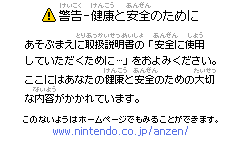

Play-Yan Micro (Japan)
Stateless / Passcode 🔌 Play-Yan Micro (OXY-006)
Cartridge Identity
- Game Code
ZMBJ(FamilyZMB)- Header Title
PLAYYANMICRO- Maker / Revision
01/ rev0- ROM Size
- 1.0 MiB (1,048,576 B)
- Save Media
None / Unknown- SHA-256
4a46655eda7ba75e426cecc26b79cad46de33358d011fd6b2709f01d5a23e166
Screenshots


Niche & Rare Accessories
Detected niche/rare GBA accessory support: 🔌 Play-Yan Micro (OXY-006).
Full 343-ROM corpus breakdown in the Cartridge Hardware & Niche Accessories Reference · auto-detected from ROM bytes via
gbakit inspect.
- Play-Yan Micro (OXY-006)
- Official Nintendo Play-Yan Micro cartridge firmware (
PLAYYANMICRO)
Cartridge Storage Architecture: Stateless / Passcode
Zero non-volatile battery hardware: This cartridge PCB contains ROM only (no SRAM, Flash, or EEPROM chips). Progression is preserved via on-screen passcodes or session-only gameplay. No
.sav file is generated or required.
Text, Fonts & Scene Data
- Primary Text Encoding
- LZ77-compressed ASCII (
5Shift-JIS runs ·5LZ77 ASCII blocks) - Font & VWF Indicators
- VWF Width Table 1bpp Font · BIOS SWIs: BitUnPack
0x10:20· LZ770x11/12:6· Huffman0x13:1· RLE0x14/15:2 - Scene & Packaging
0ROM pointer tables (≥32 entries,0≥200) ·0relativeu32TOCs ·320OAM metasprite hits